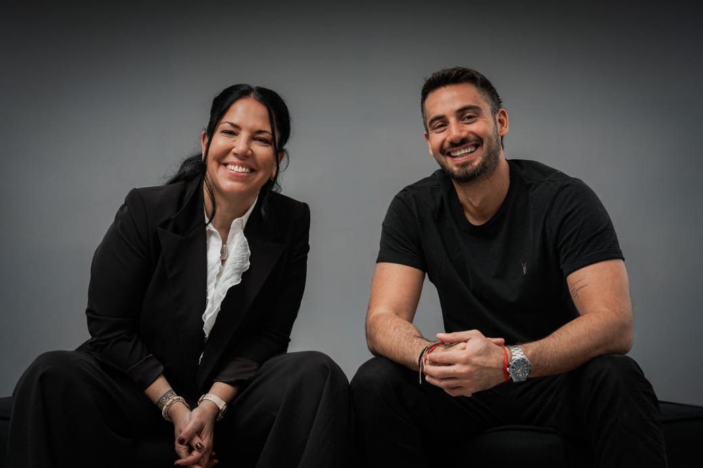

Una grilla, mil conversaciones.
Desde temprano a la mañana, hasta el final del día, hay un programa para cada momento.
Estos son los programas destacados de Luzu...
Programación
Siempre hay algo para ver, encontrá tu próximo programa favorito.
Lucas Ortega
Cris Vanadía
Diego Leuco, Mica Vazquez, El Trinche y Yoyi Francella
Nico Occhiato, Flor Jazmín Peña, Momi Giardina, Santi Talledo, Martín Garabal, Ángela Torres y Marcos Giles
El Pollo Álvarez y Mica Vazquez
Fede Popgold, Anita Espósito, Cami Mayan, Lucas Spadafora, Juli Castro, Pestañela y Agusneta
FerBo, Domi Faena, Belu Negri, Lucas Lezin y Teo D'Elia
Cris Vanadía
Carina Zampini, Diego Castro y Gabriel Schultz
El Pollo Álvarez, El Purre, Diego Castro y Marcos Giles
Tati Roust, El Pulpo, El Turro y La Gurisa
El Pollo Álvarez, Tati Roust y Agus García
Flor Jazmín Peña, Anita Espósito, La Joaqui y Evitta Luna
La Gurisa, Evitta Luna, Teo Podolsky y Juan Cottet
Todo empezó con una idea.

En noviembre de 2020, Nicolás Occhiato y Gabriela Rivero comenzaron a desarrollar un proyecto que buscaba llevar el entretenimiento a un nuevo formato. Así nació Nadie Dice Nada, una transmisión que comenzó de manera remota y que se convirtió en el punto de partida de Luzu TV.
En 2021, el proyecto se consolidó como canal de streaming y comenzó a ampliar su programación, incorporando nuevas voces, formatos y propuestas. Lo que empezó como un programa terminó convirtiéndose en uno de los principales referentes del streaming argentino.
Hoy, Luzu TV cuenta con más de 3,4 millones de suscriptores en YouTube y un promedio de 84.296 espectadores en los últimos 30 días.